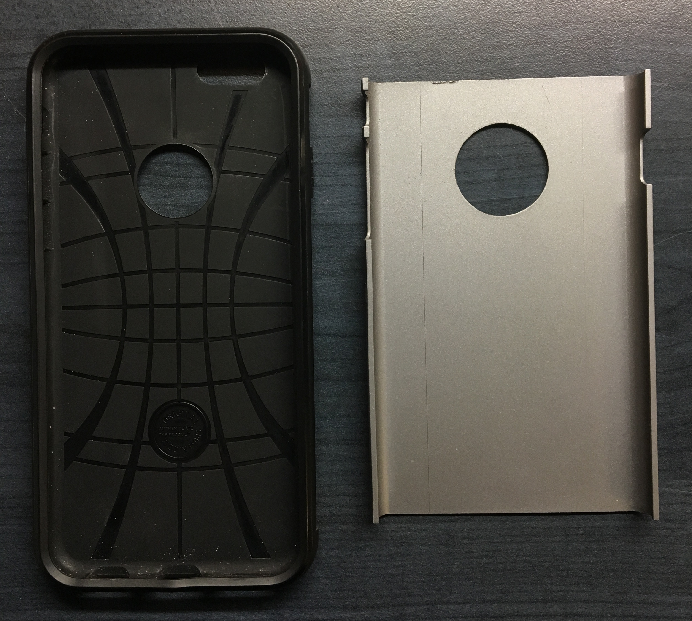
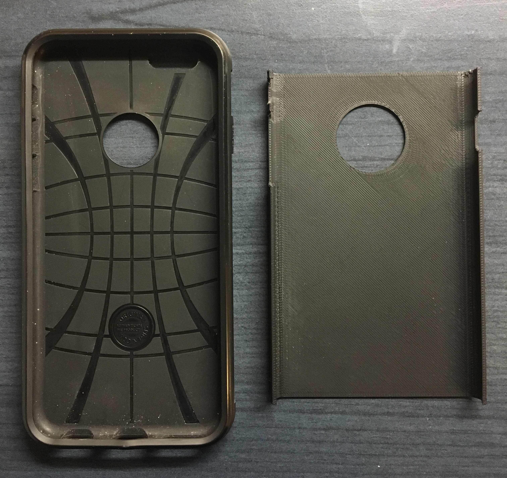
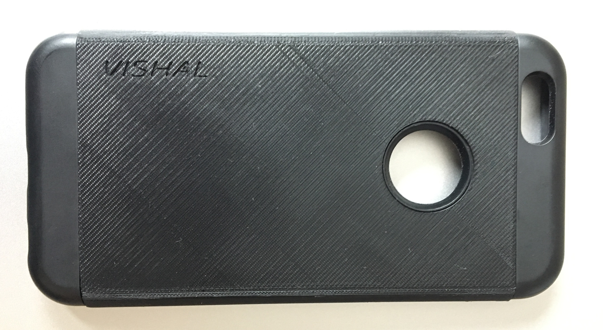

---

layout: default

---

		
<div class="projects">
			
<h4>Projects</h4>

<div align="center">
<p><u>Bluetooth Car</u></p>
<p>The bluetooth car was built using an Arduino Uno and the L298N motor driver. The HC-05 module was used for the bluetooth connection. The car has 9 different states, which are: stop, steer left, steer right, forward, forward left, forward right, reverse, reverse left, and reverse right. The car can be controlled using an app or any device can send bluetooth serial commands. The android app shown in videos below was downloaded from the Google Play Store and uses the phone's accelerometer to control the car.</p>


<video width="70%" controls>
	<source src="BTcarStationary.mp4" type="video/mp4">
</video>
<video width="70%" controls>
	<source src="BTcarMoving.mp4" type="video/mp4">
</video>

<p><u>Autonomous Snow Plow</u></p>
<p>The autonomous snow plow was built using a LEGO Mindstorms EV3 kit. The robot uses four motors, a touch sensor, a color sensor, an ultrasonic sensor, and a gyro sensor. Two motors are used to drive the robot, one motor is used to spin the helix (snow clearing mechanism), and one motor is used to spin the ultrasonic sensor so that the robot can measure distances at different angles. The touch sensor is used as an emergency stop button to stop the robot as soon as the touch sensor is pressed. The color sensor is used to follow a line and the gyro sensor is used to make accurate ninety degree turns. The robot is programmed to find a yellow line and follow the line. The robot regularly checks for houses on its right, and if it sees a house, it cleans the driveway, reverses, and continues to follow the yellow line. When the robot reaches a wall, it performs a U-turn and continues following the yellow line. Upon reaching the end of the course, the robot parks itself in the starting position, provided there is enough space to park.</p>


<p>Line Following and U-Turn Functions</p>
<video width="70%" controls>
	<source src="snow4.mp4" type="video/mp4">
</video>

<br><br><br>
<p><u>Obstacle Avoiding Robot</u></p>
<p>The obstacle avoiding robot was built using an Arduino Uno. The robot is programmed to drive forward as long as there is more than 15 cm of space in front of it. When the robot senses an obstacle, it stops and beeps twice. The robot then waits 5 seconds for the obstacle to be moved and rechecks the distance in front of it. If the obstacle is no longer present, the robot continues forward. If the obstacle is still in front of the robot, the robot checks the distance on its left and right, and then turns in the direction that has more space and drives forward. The robot continues forward until it sees another obstacle.</p>


<br><br><br>
<p><u>3D Printed Cell Phone Case Replacement</u></p>
<p>The cell phone case replacement was designed in SolidWorks after measuring the original part using calipers. The part was then 3D printed using PC-ABS.</p>




<br><br><br>
<p><u>3D Printed Cell Phone Stand</u></p>
<p>The cell phone stand is designed to hold a phone at an angle of 65 degrees, both in the landscape and portrait orientation. The stand uses less than 2 cubic inches of material to 3D print, as specified by the project constraints.</p>


<br><br><br>
<p><u>DNA Replication Model</u></p>
<p>The goal of this project was to create a model that shows DNA replication. The DNA model is created using Solid Edge. The double helix of the DNA is built to scale with ten base pairs per turn. The backbone consists of sugars (black) and phosphates (white). There are two hydrogen bonds (yellow) between thymine (blue) and adenine (red), and three hydrogen bonds (silver) between guanine (green) and cytosine (orange). The leading and lagging strands are shown at the bottom of the model, along with all the enzymes involved in DNA replication. Near the top, a mutagen is shown destroying parts of the DNA.</p>


</div>